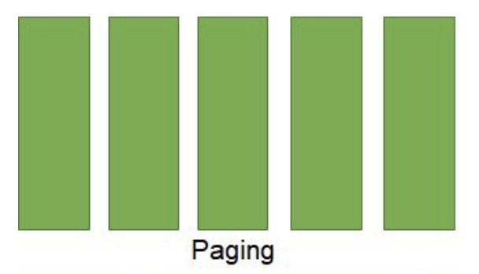
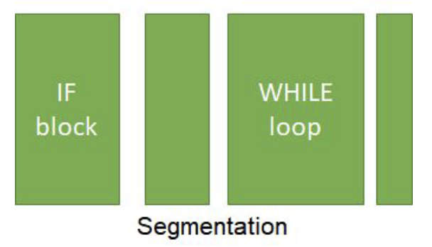

An operating system is a collection of programs that work together to provide an interface between the user and computer.
Popular operating systems include WindowsOS, MACOS, IOS, and Linux.
Memory management (management of primary and secondary storage)
Memory must be shared between multiple programs running simultaneously.
Here are some of the methods used to manage memory in a system.
Paging is when memory is split into equal size chunks, known as pages.
Programs can take up multiple pages, and each one can be swapped between the hard disk as needed.

Segmentation is the splitting up of memory into different sized chunks to fit the program running.
Segments are allocated to different blocks of code in a program.

Virtual memory is a section of the hard drive
which acts as part of the RAM when there isn't enough space for programs to run.
Sections of programs that aren't currently in use are swapped to the virtual memory,
freeing up space for other programs.
The key issue with each of these techniques is disk thrashing.
When pages of the main memory are swapped too often,
more time is spent swapping the sections than executing them.
This leads to "freezes" and slows down the running programs.
Interrupts
Interrupts are signals from software or hardware indicating that a process needs attention.
Different processes have different priorities,
so they are stored in order of priority in a priority queue.
Examples of interrupts include:
the power button being pressed, a mouse being disconnected and a printer finishing a job.
At the end of each FDE cycle, the CPU checks for higher priority tasks than the current one.
If one exists, the contents of each register in the CPU are stored in a stack
while the higher priority task is executed.
Scheduling
It is the operating system's job to ensure each section of each program receives a fair amount of processing time.
To do this, scheduling algorithms are used to determine which job should be processed first.
Round-robin — the processor processes each job for a set amount of time called a time slice,
and then repeats until all jobs are finished.
The drawback to this is that longer jobs will take much longer to complete
First come, first served — jobs are completed in chronological order by when they enter the queue.
This method doesn't allow for priority queueing.
Multilevel feedback queues — jobs are placed in a queue based on priority
and the processor processes the highest priority jobs first
Shortest job first — the shortest job is processed first.
This requires the CPU to know how long each task will take.
There is also a risk of processor starvation where short jobs continue being added to the queue.
Shortest time remaining — the job with the shortest time remaining is processed until it is finished
or a job with a shorter time remaining exists in the queue. Again, there is a risk of processor starvation.
Types of operating systems
Distributed — multiple devices share the same operating system
Embedded — an operating system with a specific task. Build within a larger system
Multitasking — tasks can be done seemingly simultaneously with the use of time slicing
Multi-user — multiple users can use one operating system, usually a supercomputer,
so jobs must be properly scheduled.
Real time — used in time-critical scenarios such as in nuclear power stations, self-driving cars, etc.
They are built to be fast and reliable.
BIOS
The BIOS, or basic input output system, is the first program that runs when a computer is turned on.
The BIOS checks that the CPU is operational, the hardware is connected and for external memory devices.
Device drivers
Device drivers are programs that allow the OS to communicate with hardware.
It translates signals between the hardware and processor.
Device drivers are specific to both the OS and the architecture of the CPU.
Virtual machines
A virtual machine is an emulation of a physical computer.
The functionality of a physical computer is provided using software.
Virtual machines have translators to translate intermediate code into bytecode that the virtual hardware can run.
A program is run in the virtual machine
The program is translated to intermediate code
The virtual machine's translator then translates this into bytecode
Virtual hardware then processes this bytecode
This executes the program
Testing software in different operating systems
Malware will only affect the virtual machine rather than the host computer
VMs can be used to run software that is incompatible with the physical processor
However, because they are not run on processor-specific hardware,
virtual machines are typically slower than a physical machine.